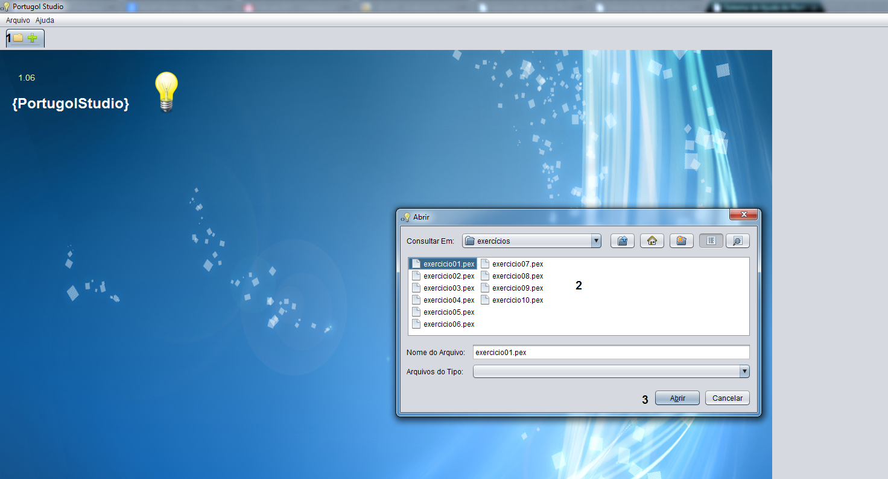
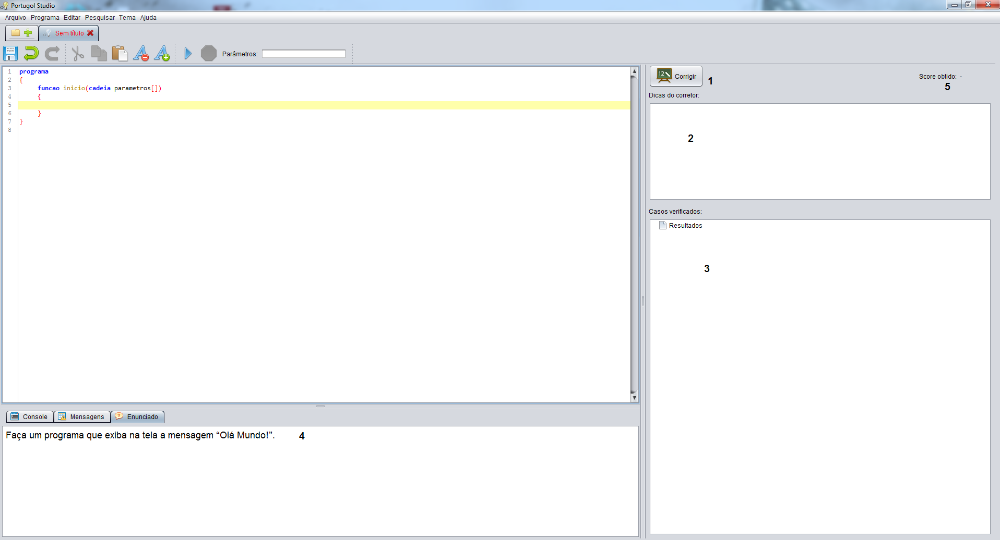

Iniciando a função de correção.

A imagem apresentada acima mostra como iniciar a função de correção do PortugolStudio:
- 1 - Clique no icone em forma de pasta para abrir um aruivo.
2 - Escolha o exercício a ser executado, lembrando que ele deve ter a extensão ".pex".
3- Clique no botão abrir.
Conhecendo o Corretor
A imagem apresentada acima mostra o ambiente de programação do PortugolStudio e ao seu lado direito a interface do corretor o qual está dividido em 4 seções:
- 1 - Botão para executar a correção.
2 - Aba que exibe as dicas caso haja um caso de teste falho.
3 - Aba que exibe os casos de teste, demonstando os casos corretos e falhos, juntamente com suas respectivas entradas e saidas.
4 - Aba que exibe o enunciado do exercício em questão.
5 - Nota gerada pelo corretor, a qual corresponde ao numero de casos de teste corretos.
Entendendo os casos de teste
Casos de Teste
Entendendo os casos de teste.
Cada caso aprensenta suas respectivas entradas e saidas, e caso esteja incorreto as saidas desejadas. Como mostra a imagem acima.
Confira Também a Sintaxe Utilizados pelo PortugolStudio